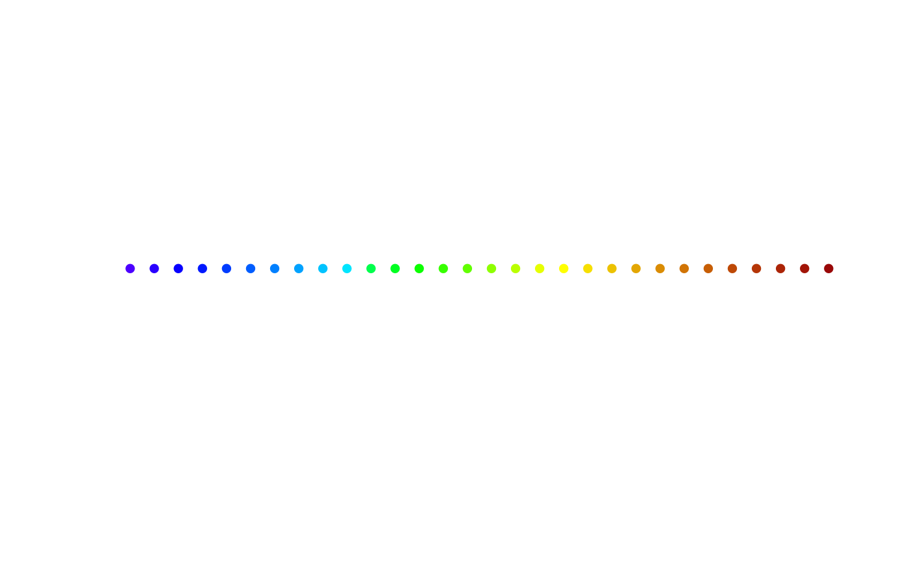

Create colour scale used in topographic figures
create_scale.RdCreate colour scale used in topographic figures
Usage
create_scale(col_range, k = NULL, type = c("topo", "redblue"))Arguments
- col_range
A numeric vector with required range of the variable to be plotted in the colour scale.
- k
A number from interval (0,1) indicating a sequence step for the colour palette. The smaller number, the finer division of the data range interval. See Details for more information about auto-computing if
NULL.- type
A character indicating the type of color palette to create. Available options:
"topo"(default value) for topographical palette and"redblue"for red-blue palette, see Details for more information.
Value
A list with two components:
- colors
A vector with hexadecimal codes of palette colours.
- breaks
A vector with breaks for cutting the data range.
The list is intended for use in scale_fill_gradientn or similar plotting calls.
Details
The topographical palette (type = "topo") is created according to topographical colours: negative values correspond to shades of blue and purple and positive values to shades of green, yellow and red. The zero value of the variable is always at the border of blue and green shades.
The red-blue palette (type = "redblue") has negative values corresponding to shades of blue and positive values corresponding to shades of red.
To compare results for different subjects or conditions, set the same col_range for all cases. Otherwise, the colours are assigned separately in each plot and are not consistent with each other.
The parameter k is set by default with respect to the range of col_range as follows:
k = 0.1for range \(\leq 30\),k = 0.03for range \(\geq 70\),k = 0.04otherwise.
Examples
# Create red-blue scale on interval (-10,10) with default step number
create_scale(col_range = c(-10,10), type = "redblue")
#> $colors
#> [1] "#2E5A87" "#5A7EA2" "#86A3BE" "#B2C8DA" "#DFEDF6" "#E4CCC6" "#D59CA2"
#> [8] "#C66C7F" "#B73C5B" "#A90C38"
#>
#> $breaks
#> [1] -10 -8 -6 -4 -2 0 2 4 6 8 10
#>
# Create topographic scale on interval c(-5,10) with small k (finer division)
CStopo <- create_scale(col_range = c(-5, 10), k = 0.02)
# plot colours of the scale as points
k_col <- length(CStopo$colors)
plot(1:k_col, rep(1, k_col), col = CStopo$colors, pch = 16,
axes = FALSE, ylab = "", xlab = "")
